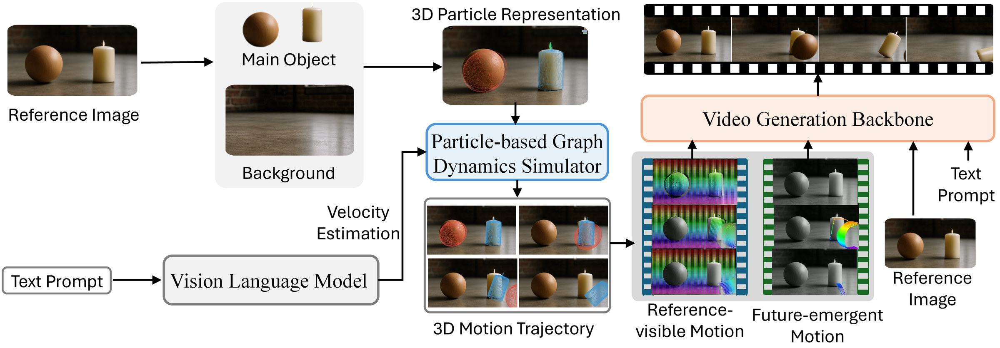
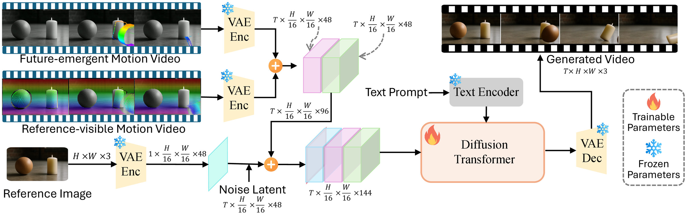
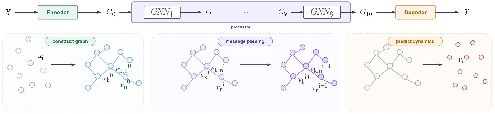
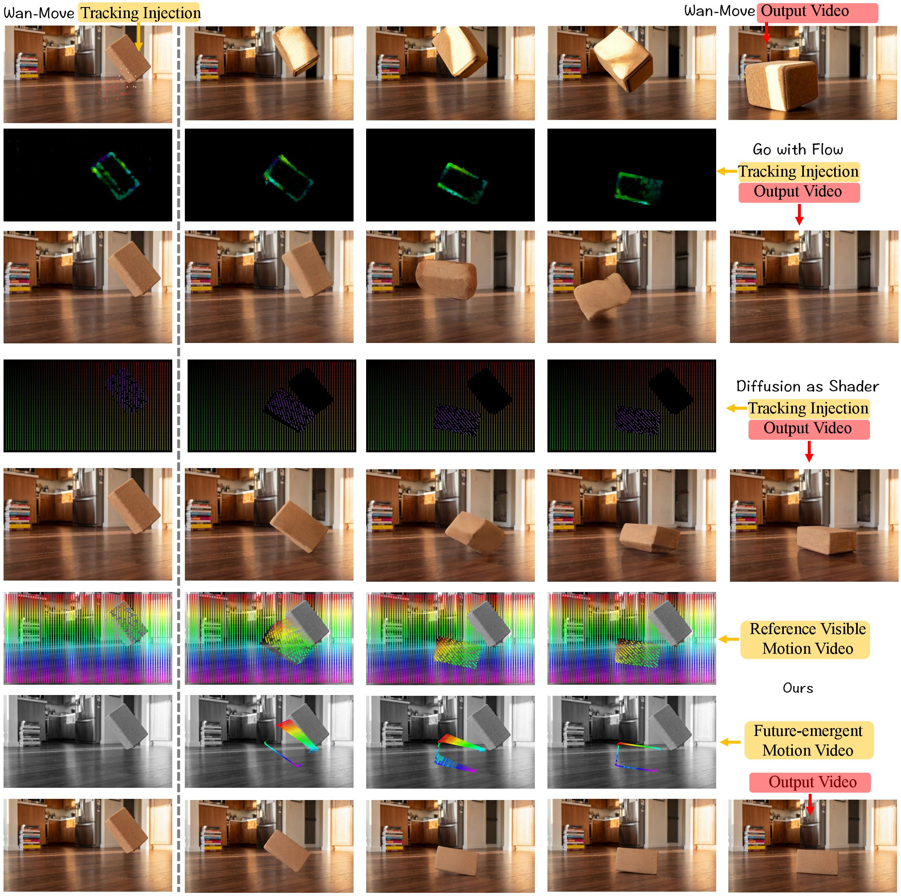
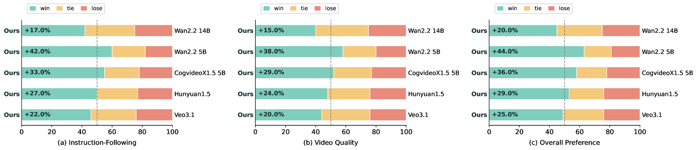

Learned physics
95.92%
PGDS learns physical dynamics from data
Average strict Acc-V of the particle simulator over seven Physion++ test scenarios — with 0 manually specified physical parameters.
NeurIPS 2026 Physics-grounded image-to-video generation
A learned particle simulator predicts how the scene in a single image will move. A visible–invisible motion field hands that motion to a video diffusion model — including the surfaces that only come into view after objects move.
1National University of Singapore 2Nanyang Technological University 3University of Oxford
✉ Corresponding author
95.92%
Average strict Acc-V of the particle simulator over seven Physion++ test scenarios — with 0 manually specified physical parameters.
2 motion videos
VIMF splits guidance into a reference-visible and a future-emergent tracking video, injected through zero-initialized latent channels (48 → 144).
4.160 / 4.394
Collision SA / PC, versus 2.917 / 3.067 for the Wan2.2-TI2V-5B backbone. Best PC on six of the seven, against open-source, physics-aware and closed-source baselines.
+44.0%
Overall-preference margin over Wan2.2-5B in pairwise evaluation, alongside +42.0% in instruction-following.
The problem
Recent video generators reach impressive visual quality, yet they often fail to produce physically consistent dynamics, because the underlying physical processes are never modeled explicitly. Existing approaches either rely on simulators with strong assumptions or use coarse semantic guidance — and both struggle to inject physical priors into the generator.
Seeing the Unseen splits the problem in two: learn the physical dynamics, then inject them into video synthesis. A lightweight Particle-based Graph Dynamics Simulator (PGDS) predicts plausible 3D trajectories, and a Visible–Invisible Motion Field (VIMF) turns them into complete, structured motion guidance.
Turning 3D trajectories into 2D flow or tracks loses depth and spatial structure.
2D conditions cover regions visible in the input frame, not content that is occluded or unseen at first.
Optical flow, tracking videos and sparse keypoints miss object-level and structure-level dynamics.
Method
Given an input image, we lift it into a simulatable 3D particle scene. PGDS models object interactions and predicts physically plausible 3D trajectories, which are rendered into reference-visible and future-emergent motion that guides a fine-tuned video diffusion model.

MoGe-2 predicts a metric point map. SAM3 segments the foreground objects from text prompts, and SAM 3D Objects reconstructs each one with its metric pose. The ground plane is fitted with RANSAC and the merged objects are converted into simulation particles; a vision-language model estimates initial velocities from the prompt.
Particles become graph nodes, connected to neighbors within radius r. Node features encode material, object-relative offset and velocity state; after T rounds of message passing a decoder predicts each particle's velocity, which updates positions and rolls out the trajectory. PGDS is trained on Physion++ with a velocity MSE loss.
The rollout is projected into a reference-visible and a future-emergent tracking video. Both are encoded by the frozen 3D VAE of Wan2.2-TI2V-5B and concatenated with the noisy latent; the first-frame latent stays clean for appearance conditioning.


Visible–Invisible Motion Field
Optical flow or sparse point tracks only describe regions observable from the reference view. VIMF decomposes physical motion into two complementary tracking signals, so the generator also receives motion for occluded surfaces and objects that become visible in later frames.
Records the motion of points that are visible in the input frame.
Captures points that are occluded or outside the reference view at first, but become visible in future frames.
Both tracking videos are encoded by the same frozen 3D VAE and concatenated with the noisy video latent along the channel axis. Patch-embedding weights for the original 48 channels are copied from the pretrained checkpoint, while those for the two tracking streams start at zero — so fine-tuning begins from the unmodified model and adds motion guidance gradually.
Ablation · Video comparison
Our full model uses both reference-visible and future-emergent tracking signals. The visible-only variant uses reference-visible tracking alone.
With visible tracking alone, the model often produces ghosting or missing content: visible trajectories describe only pixels observed in the reference frame, and say nothing about regions exposed after objects move. Future-emergent tracks supply that missing motion, so newly appearing content is reconstructed coherently.
Qualitative results
Baselines frequently show object interpenetration, implausible trajectories, or never trigger the expected physical event. Our method produces correct collision responses and complete domino chains.
Compare methods using the same reference image and prompt. Choose a scenario and play the videos side by side.
Domino · Video comparison
PromptThe right wooden block tips slowly to the left and bumps the middle block. The middle block rocks and falls into the left block, which then topples over to the left, completing a gentle domino chain on the wooden tabletop.
Same reference image and prompt. Read left to right, then top to bottom. Videos play at their original speed and duration.
Free fall & collision · Video comparison
PromptThe yellow tennis ball follows a smooth parabolic path down and left, gently striking the middle of the mug's right outer wall, not its rim or handle. The ball slows on contact, pushing the upright mug about 2 cm left without tipping or rotating.
Same reference image and prompt. Read left to right, then top to bottom. Videos play at their original speed and duration.
Free fall · Video comparison
PromptThe cork yoga block tips over to the left and lands on the floor.
Same reference image and prompt. Read left to right, then top to bottom. Videos play at their original speed and duration.
Collision · Video comparison
PromptThe small red ball rolled toward the right and hit the soap, knocking it down, while the ball itself came to a stop.
Same reference image and prompt. Read left to right, then top to bottom. Videos play at their original speed and duration.
Translation · Video comparison
PromptThe red plastic building block begins to slide smoothly to the right across the glossy floor with slow velocity, picking up a little speed as it glides. It stays upright without tipping, then gradually slows from friction while continuing rightward.
Same reference image and prompt. Read left to right, then top to bottom. Videos play at their original speed and duration.
We convert the same PGDS-predicted trajectories into the representation each method expects and keep its original pretrained weights: optical flow for Go with Flow, 10 sparse tracking points for Wan-Move, and visible tracking videos for Diffusion as Shader.

Benchmark
Four primitive motion types — free fall, domino, collision and translation — and three compositions, each with 50 reference images and prompts, including multi-object scenes. Semantic Adherence (SA) measures alignment with the prompt in content and motion (e.g., force direction and location); Physical Commonsense (PC) measures whether the motion follows plausible dynamics. Both are scored 1–5 by VideoPhy2-AutoEval-7B; higher is better.
Domino · SA and PC for every method (1–5)
A highlighted value is the best in its column; “–” indicates unsupported cases. Click a scenario to show it in the chart above.
All methods receive the same PGDS trajectories. Our visible-only and full variants share the same diffusion backbone; the full variant adds the future-emergent tracking video. Highlighted = best in column.
The visible-only variant scores lower than the full model in all four scenarios on both metrics, with the largest gains from dual-stream guidance on Domino and Collision.
External evaluation on VideoPhy2 samples compatible with our setting. Highlighted = best.
Future-emergent guidance lifts both scores over the visible-only variant.
Vel. RMSE over complete rollouts; Acc-V: share of particles within strict (0.05 m/s or 5%) or relaxed (0.10 m/s or 10%) velocity-error thresholds; energy bias = (Epred − EGT) / EGT × 100%.
Setup cost and generalization, with time and parameter estimates from public implementations.
PGDS needs no manual parameter tuning, keeps a competitive runtime and generalizes strongly to unseen shapes.
Annotators compare our videos with each baseline on (a) instruction-following, (b) video quality — visual fidelity, temporal coherence, artifact severity — and (c) overall preference. Win / tie / lose rates in %.

Citation
@inproceedings{bao2026seeing,
title = {Seeing the Unseen: Unified Visible--Invisible Motion for Physically Consistent Video Generation},
author = {Bao, Mingyang and Ye, Fangda and Chen, Xihao and Li, Bobo and Li, Jason and Wu, Shengqiong},
booktitle = {Advances in Neural Information Processing Systems (NeurIPS)},
year = {2026}
}This codebase builds on SAM-3D-Objects, SAM3, Physion and Physion-particles, SpaTrackerV2, Diffusion as Shader, VideoX-Fun, Wan2.2 and MiraData. We thank the authors for making their work publicly available.